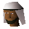

Al Kharid
Town at 3297, 3150 · Kingdom Of Misthalin
Open on the world map → Open in knowledge graph →
NPCs
| NPC | Level | Spawns | Notable drops |
|---|---|---|---|
| 14 | 1 | ||
| 9 | 9 | Coins, Herb drop table, Bolt, Fishing bait | |
| 1 | |||
 Hassan | 1 |
Open on the world map → Open in knowledge graph →
| NPC | Level | Spawns | Notable drops |
|---|---|---|---|
| 14 | 1 | ||
| 9 | 9 | Coins, Herb drop table, Bolt, Fishing bait | |
| 1 | |||
 Hassan | 1 |